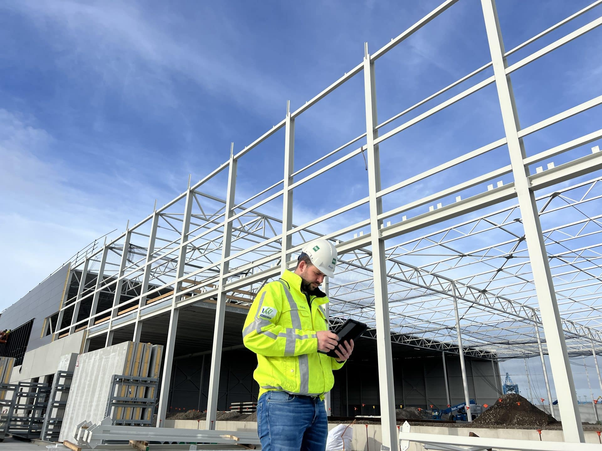

Vrolijk Groep maakt de overstap naar geïntegreerde ERP-oplossing
De ERP-uitdagingen
Bas: ‘Voordat Vrolijk in 2021 besloot over te stappen naar een nieuw ERP-systeem, werkten we met een oplossing die in eerste instantie prima voldeed voor een bedrijf met een gemiddelde omzet. Maar naarmate de omzet groeide, werd duidelijk dat het oude systeem niet meer in staat was om de complexiteit en het volume van de projecten bij te houden. Een belangrijke uitdaging was het gebrek aan efficiëntie in de projectbeheersing en -bewaking. Het beheer van projecten werd tijdrovend en kostte veel mankracht, wat het bedrijf in de weg stond om sneller en effectiever te werken.’
De wens om het ERP-systeem te verbeteren, resulteerde in een zoektocht naar een meer geïntegreerde oplossing. Vrolijk besloot na een zorgvuldige selectie voor 4PS te kiezen. De keuze voor 4PS is gemaakt vanwege onder andere de uitgebreide mogelijkheden voor het beheren van projecten en het aanbieden van flexibiliteit in de procesontwikkeling. Het nieuwe ERP-systeem moet niet alleen de bestaande processen verbeteren, maar ook ruimte bieden -en blijven bieden- voor de toekomstige ontwikkelingen van het bedrijf.
DIS als partner
Vrolijk is bewust bezig met het beheer van het nieuwe systeem, wat cruciaal is voor het succes van de implementatie en doorontwikkeling. er is dan ook behoefte aan support op zowel de technische kant, als aanslagkracht om het ERP-systeem effectief te beheren en verder te ontwikkelen. Via haar netwerk kwam Vrolijk in contact met DIS als passende partner.
Sinds 1 september 2022 is DIS partner voor verschillende aspecten van het ERP-beheer bij Vrolijk, waaronder functioneel beheer, advies en ontwikkeling van koppelingen. ‘We hadden behoefte aan een partner die niet afhankelijk is van één persoon, maar die met een team van experts kan bijdragen aan de continue optimalisatie van het systeem. DIS biedt niet alleen de benodigde kennis en ervaring, maar ook de flexibiliteit om samen te werken in een dynamische omgeving ‘ vertelt Bas.
De Implementatie: Samenwerking tussen Vrolijk en DIS
De implementatie van de diensten van DIS verloopt soepel dankzij de intensieve samenwerking tussen de twee partijen. Door goed te luisteren en letterlijk te integreren in de business van Vrolijk, door regelmatig op locatie aanwezig te zijn, leerde DIS in korte tijd de cultuur en behoeften van de organisatie goed kennen. Het is echt een partnership gericht op samenwerking wat resulteert in effectieve oplossingen.
Robbert Visscher, de vaste contactpersoon van DIS bij Vrolijk, speelt hierbij een belangrijke rol. Bas: ‘Zijn aanwezigheid op de werkvloer en zijn vermogen om de vraagstellingen van Vrolijk goed af te stemmen op de oplossingen van DIS en 4PS, dragen bij aan het succes van de samenwerking. Het creëert wederzijds begrip en zorgt ervoor dat de processen steeds verder geoptimaliseerd worden’.
Een succesvolle samenwerking
De samenwerking met DIS helpt Vrolijk om het ERP-systeem te optimaliseren en verder te ontwikkelen. “DIS heeft niet alleen de juiste technische kennis en ervaring, maar ook de flexibiliteit en samenwerking die nodig zijn voor het realiseren van langdurige successen. Ik zou DIS daarom zeker aanbevelen als partner voor ERP-beheer en -optimalisatie als dit past bij het soort bedrijf”, voegt Bas toe.